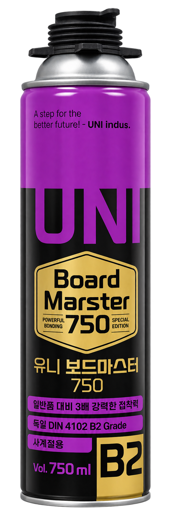

JOINT FILLING
01
이음부·틈새 충진
보드와 보드 사이에 남는 틈새를 채우는 작업에 사용합니다.
BOARD INSTALLATION SOLUTION
보드 시공용 건 타입 우레탄폼
보드 사이 틈새부터 접착 보강까지.
현장의 다음 공정을 위한 선택, 보드마스터 750.
마우스로 자유롭게 돌려보세요 · 휠 / 두 손가락으로 확대
확대 후 Shift + 드래그로 위아래 이동

01 / APPLICATION
단열보드의 이음부와 틈새를 채우고,
보드 시공에 필요한 접착을 보강합니다.
보드와 보드 사이에 남는 틈새를 채우는 작업에 사용합니다.
현장 시방에 따라 단열보드 시공 시 접착 보강에 사용합니다.
※ 적용 부위를 설명하는 개념 도식입니다. 표면재·바탕면의 적합성을 사전에 확인하고 현장 시방에 따른 고정 방법을 준수하세요.
02 / PRODUCT DETAILS
단열보드의 이음부와 틈새 등
충진이 필요한 부위에 적용합니다.
PUR·PIR, EPS, XPS 등
보드 시공의 접착 보강을 돕습니다.
전용 폼건을 결합하여 사용하는
일액형 PU 폼입니다.
현장에 필요한 제품 정보를 확인하세요.
03 / HOW TO USE
작업 전 제품 표시사항과 시공안내서·표준시방서를 확인하세요.
현장 조건에 따라 작업 방법이 달라질 수 있습니다.
먼지·이물질·유분을 제거하고 바탕면 적합성을 확인합니다.
제품 사용법에 따라 충분히 흔들고 전용 건을 결합합니다.
용도와 현장 시방에 맞춰 분사 위치와 양을 조절합니다.
제품 시방서와 현장 시방에 따라 보드를 부착하고 필요한 고정을 진행합니다.
제품 안내에 따라 폼건을 세척하고 용기를 안전하게 보관합니다.
VIDEO GUIDE
제품 준비부터 시공과 정리까지,
영상으로 안내해 드릴 예정입니다.
충분한 환기와 적절한 보호구가 필요합니다. 화기·직사광선을 피하고, 작업 온도·용기 온도·피착면 온도와 경화시간은 각각 구분하여 확인하세요.
제품 소개와 표준 시공 방법, 취급 주의사항을 PDF로 확인하세요.
04 / FAQ
제품 선택부터 시공·보관까지,
시공안내서·표준시방서를 바탕으로 안내합니다.
제공된 시공안내서 기준의 안내입니다.
실제 작업 전 최신 제품 표시사항과 현장 시방을 함께 확인해 주세요.
단열보드의 이음부·틈새 충진과 접착 보강에 사용해 주세요. 보드마스터 750은 일액형 건 타입 우레탄폼으로, 보드 사이의 틈을 채워 단열층의 연속성을 유지하고 보드 시공의 접착을 보강하는 데 도움을 줍니다.
단열보드 자체를 대신하거나 설계에서 요구하는 구조 고정을 대체하는 용도로 사용하지 마세요.
우레탄(PUR·PIR), EPS, XPS 등 단열보드에 사용해 주세요. 같은 종류의 보드라도 표면 코팅·표면재와 바탕면, 현장 조건에 따라 적합성이 달라질 수 있습니다.
시공안내서에 따라 사용할 보드의 종류와 표면재, 부착할 바탕면을 먼저 확인해 주세요. 필요하면 사전 시험과 제품·시공 상담을 진행해 주세요.
전용 폼건을 결합해 사용해 주세요. 구매 전 구성품과 폼건의 포함·별도 구매 여부를 확인해 주세요.
시공안내서와 사용할 폼건의 사용법을 확인하고, 결합이 적합한 전용 폼건을 안전하게 연결해 주세요.
한 캔의 용량은 750 mL, 박스 포장은 15개입 / BOX입니다. 제조사는 (주)유니산업입니다.
낱개·박스 주문 가능 여부, 최소 주문수량과 거래 조건은 구매·납품 상담에서 확인해 주세요.
표준 시방서에 따라 접착면의 이물질·먼지·기름기를 충분히 제거해 주세요. 표면 오염을 정리한 뒤 보드 표면재와 바탕면의 적합성을 확인해 주세요.
작업 전 최신 제품 표시사항과 사용방법, 현장 시방도 함께 확인해 주세요.
시공안내서와 재료별 시방에 따라 수분 적용이 가능한지 먼저 확인해 주세요. 수분을 가할 때는 접착면을 살짝 적셔 주세요. 물이 고이거나 흥건하게 젖지 않도록 주의해 주세요.
보드 표면재와 바탕면의 수분 허용 여부, 현장 습도를 확인한 뒤 작업해 주세요.
표준 시방서에 따라 제품을 거꾸로 들고 상하로 약 20회 이상 충분히 흔든 후 폼건과 결합해 주세요.
작업 전 제품 표시사항을 확인하고, 전용 폼건의 연결 방법과 취급 주의사항을 지켜 주세요.
보드 뒷면의 접착 보강은 표준 시방서에 따라 다음 기준으로 분사해 주세요.
위 수치는 보드 접착 시공 기준입니다. 이음부 틈새 충진에 같은 양을 일괄 적용하지 마세요. 보드 크기·바탕면·현장 시방과 최신 제조사 안내에 맞춰 조절해 주세요.
분사 후 부착 가능한 시점은 작업 온도·습도와 제품 상태에 따라 달라질 수 있으므로, 최신 제품 사용법과 제조사 안내를 확인한 뒤 부착해 주세요.
표준 시방서에 따라 부착 후 약 5분 이내에 접착물이 움직이지 않도록 고정목 등을 활용해 눌러 고정해 주세요. 이 시간을 분사 후 대기시간이나 완전 경화시간으로 적용하지 마세요.
현장 설계와 시방에서 정한 고정 방법을 지켜 주세요. 표준 시방서에 따라 부착 후 접착물이 움직이지 않도록 고정목 등을 사용해 고정해 주세요.
보드의 무게, 설치 방향과 바탕면을 확인하고 필요한 임시 지지·기계적 고정을 진행해 주세요. 접착 보강만으로 구조 고정을 생략하지 마세요.
사계절용이라도 작업 온도 조건을 확인해 주세요. 표준 시방서에 따라 부착할 피착면의 온도를 최소 5℃ 이상으로 유지해 주세요.
피착면 온도는 공기 온도나 캔의 온도와 다릅니다. 겨울철에는 작업 환경·용기·피착면 온도를 각각 확인하고 최신 제품 표시사항과 현장 시방을 지켜 주세요.
표면 경화, 절단 가능, 완전 경화와 보드 부착·고정에 필요한 시간을 각각 구분해 주세요.
표준 시방서의 부착 후 약 5분 이내 고정과 시공 후 5시간 이내 충격 주의를 완전 경화시간으로 적용하지 마세요. 개별 경화시간은 작업 온도·습도 등 조건을 고려해 최신 제품 안내 또는 기술자료에서 확인해 주세요.
표준 시방서에 따라 시공 후 5시간 이내에는 충격을 가하지 마세요. 보드가 움직이거나 시공 부위에 충격이 전달되지 않도록 보호해 주세요.
5시간이 지났더라도 완전 경화나 모든 후속 작업이 가능하다고 판단하지 마세요. 다음 공정은 제품의 경화 상태와 현장 시방을 확인한 뒤 진행해 주세요.
표준 시방서에 따라 작업 공간을 충분히 환기해 주세요. 특히 지하실 등 밀폐된 공간에서는 작업 중 발생할 수 있는 가스가 머무르지 않도록 환기해 주세요.
피부와 눈에 닿지 않도록 장갑·보안경 등 적절한 보호구를 착용해 주세요. 작업 전 최신 안전보건자료(SDS)와 제품 경고표시도 확인해 주세요.
표준 시방서에 따라 폼건을 결합한 상태에서 건 뒷부분의 조절 밸브를 완전히 잠가 보관해 주세요.
제품 표시사항과 사용하는 폼건의 관리 방법을 함께 확인해 주세요. 보관 온도·장소, 세척과 장기간 보관은 최신 제품 안내와 해당 폼건 사용법을 따라 주세요.
기술자료 게시판에서 제품자료·안전자료·시공자료를 확인해 주세요. 등록된 자료는 제목을 열어 내려받아 주세요. 준비 중인 자료는 상담으로 문의해 주세요.
문의할 때 필요한 자료명과 사용 보드·바탕면·현장 조건을 함께 알려 주세요.
보드와 바탕면에 따라 접착 성능이 달라질 수 있으므로, 시공안내서에 따라 표면재와 바탕면의 적합성을 먼저 확인해 주세요.
시공안내서의 접착시험은 목재–목재 조건의 결과입니다. 이를 EPS·XPS 등 모든 보드의 접착 성능으로 적용하지 마세요. 실제 사용할 재료와 현장 조건에 맞는지 확인한 뒤 시공해 주세요.
공식 유통 파트너인 아이솔(ISOL) 또는 케이산업(K-INDUS)으로 문의해 주세요. 사용 용도, 예상 수량, 납품 지역과 희망 일정을 함께 알려 주세요.
가격, 최소 주문수량, 배송·공급 일정과 폼건 포함 여부는 구매 전 확인해 주세요. 현재 사이트에서는 문의 내용을 작성한 뒤 복사해 상담 시 활용해 주세요. 온라인 접수는 아직 연결 전입니다.
05 / CONTACT
제품 선택부터 시공 조건, 대량 납품까지.
현장에 필요한 내용을 남겨주세요.
06 / OFFICIAL PARTNERS
보드마스터 750과 함께하는 공식 유통 채널 파트너입니다.
공식 유통 파트너
공식 유통 파트너
07 / TECHNICAL RESOURCES
제품과 시공에 필요한 자료를 확인하세요.
전체 3건
제품 규격과 적용 조건을 안내하는 기술자료입니다. 최종 자료 확인 후 제공할 예정입니다.
관련 자료 문의 ↗제품 취급과 보관에 필요한 안전자료입니다. 최종 자료 확인 후 제공할 예정입니다.
관련 자료 문의 ↗제품 소개, 표준 시공 방법과 시공·취급 주의사항을 담은 PDF입니다. 표준 시방서는 파일의 2페이지에서 확인하세요.
파일 내려받기 ↓검색 조건에 맞는 자료가 없습니다.
자료 제목을 누르면 첨부파일을 내려받을 수 있습니다. 자료가 없는 분류는 준비 중으로 표시됩니다.